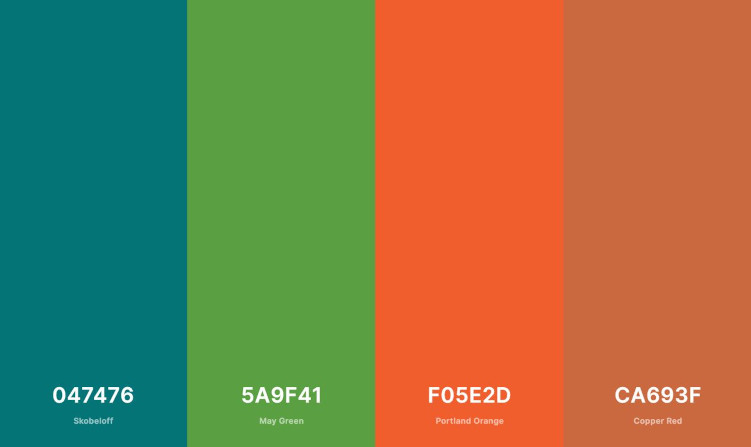

Primary
Skobeloff is going to be used for the background color for the header and the footer.
Secondary
May Green is going to be used for the nav bar background color.
Accent 1
Portland Orange is going to be used for the headings.
Accent 2
Copper Red is going to be used for the little details here and there like the shadow on the images.
